<title>Загрузка мест из Excel</title>
<meta name="claude:viewport-fit-sides" content="cover">
<style>
  /* Рабочий лист сравнения: подпись «сейчас / предлагаю», снимки парами, опись таблицей. Цвета — тема «Стандартная» приложения. */
  :root {
    --bg: #f7f4ee; --card: #ffffff; --ink: #172330; --muted: #626e7b; --line: rgba(28,43,57,.14);
    --gold: #c49a5f; --gold-text: #8a6a35; --new: #52705f; --soft: rgba(196,154,95,.10);
    --f-body: "IBM Plex Sans", system-ui, -apple-system, "Segoe UI", sans-serif;
    --f-num: "IBM Plex Mono", ui-monospace, Menlo, monospace;
  }
  @media (prefers-color-scheme: dark) { :root:not([data-theme="light"]) {
    --bg: #101923; --card: #172330; --ink: #f7f4ee; --muted: #a8b2bd; --line: rgba(255,255,255,.12);
    --gold-text: #d8bd91; --new: #86a593; --soft: rgba(196,154,95,.13); color-scheme: dark } }
  :root[data-theme="dark"] {
    --bg: #101923; --card: #172330; --ink: #f7f4ee; --muted: #a8b2bd; --line: rgba(255,255,255,.12);
    --gold-text: #d8bd91; --new: #86a593; --soft: rgba(196,154,95,.13); color-scheme: dark }
  * { box-sizing: border-box; }
  body { background: var(--bg); color: var(--ink); font: 15px/1.55 var(--f-body); }
  main { max-width: 1440px; margin: 0 auto; padding-block: 24px 64px;
    padding-left: max(16px, env(safe-area-inset-left, 0px)); padding-right: max(16px, env(safe-area-inset-right, 0px));
    display: flex; flex-direction: column; gap: 14px; }
  h1 { font-size: 26px; margin: 0; text-wrap: balance; }
  h2 { font-size: 19px; margin: 26px 0 0; text-wrap: balance; display: flex; gap: 10px; align-items: baseline; }
  h2 .n { font: 600 13px var(--f-num); color: var(--gold-text); }
  h3 { font-size: 12px; margin: 8px 0 0; color: var(--muted); text-transform: uppercase; letter-spacing: .06em; }
  p { margin: 0; max-width: 75ch; } .muted { color: var(--muted); }
  .lead { background: var(--card); border: 1px solid var(--line); border-radius: 14px; padding: 14px 16px; display: flex; flex-direction: column; gap: 8px; }
  .lead ul { margin: 0; padding-left: 20px; display: flex; flex-direction: column; gap: 4px; }
  .pair { display: grid; grid-template-columns: repeat(2, minmax(0, 1fr)); gap: 14px; align-items: start; }
  .pair.phone { grid-template-columns: repeat(auto-fill, minmax(0, 300px)); }
  .one { display: grid; grid-template-columns: minmax(0, 1fr); }
  figure { margin: 0; background: var(--card); border: 1px solid var(--line); border-radius: 14px; padding: 10px; display: flex; flex-direction: column; gap: 8px; min-width: 0; }
  figcaption { font-weight: 700; font-size: 12px; text-transform: uppercase; letter-spacing: .06em; }
  figcaption.now { color: var(--muted); } figcaption.new { color: var(--new); }
  figcaption span { text-transform: none; letter-spacing: 0; font-weight: 400; color: var(--muted); }
  figure img { width: 100%; height: auto; display: block; border-radius: 8px; border: 1px solid var(--line); }
  .table-wrap { overflow-x: auto; background: var(--card); border: 1px solid var(--line); border-radius: 14px; }
  table { width: 100%; border-collapse: collapse; font-size: 14px; min-width: 760px; }
  th, td { text-align: left; padding: 9px 12px; border-bottom: 1px solid var(--line); vertical-align: top; }
  th { font-size: 11.5px; text-transform: uppercase; color: var(--muted); letter-spacing: .06em; }
  td.n { width: 40px; font: 600 13px var(--f-num); color: var(--muted); }
  tr.new td { background: var(--soft); }
  .tag { display: inline-block; font-size: 11.5px; font-weight: 600; border-radius: 999px; padding: 1px 8px; border: 1px solid var(--line); white-space: nowrap; }
  .tag.same { color: var(--muted); } .tag.chg { color: var(--gold-text); } .tag.add { color: var(--new); }
  kbd { font: 12px var(--f-num); border: 1px solid var(--line); border-radius: 5px; padding: 0 4px; }
  @media (max-width: 767px) { .pair { grid-template-columns: 1fr; } h1 { font-size: 21px; } }
</style>
<link rel="stylesheet" href="https://fonts.googleapis.com/css2?family=IBM+Plex+Mono:wght@500;600&family=IBM+Plex+Sans:wght@400;600;700&display=swap">

<main>
  <h1>Список помещений из Excel — сейчас и как предлагаю</h1>
  <p class="muted">P2-0056, этап 2 · 28.10.2026 · снимки настоящего экрана из ветки P2-0056 на стенде с подставными данными: проект «Репин», Корпус 1 (Секция 1, «1 этаж»…«5 этаж», «Кв. 1…20») и Корпус 2. Файл — синтетическая квартирография «как у заказчика»: Дом, Подъезд, Этаж, № кв., Площадь общая и жилая, Кол-во комнат, Цена. Сервер с новыми функциями — подставной, боевой не трогали.</p>

  <div class="lead">
    <b>Коротко</b>
    <ul>
      <li>Excel со списком помещений перетаскивается на экран «Объекты и места» (на компьютере) или выбирается через «⋯ → Загрузить из Excel» (телефон и компьютер). Там же — «Скачать шаблон».</li>
      <li>Экран сам узнаёт столбцы по заголовкам (корпус, секция, этаж, помещение, номера, площадь, комнаты); если не так — столбец поправляется выпадающим списком. Цена, жилая площадь, «№ п/п» — «не брать».</li>
      <li>Предпросмотр «светофором»: <span class="tag add">Новое</span> будет создано, <span class="tag same">Уже есть</span> не трогаем, <span class="tag chg">Иначе</span> есть, но в файле другие номер или площадь — не меняем, <span style="color:#b5452b" class="tag">Ошибка</span> — с причиной. Пока есть ошибка, «Создать» недоступна, и ничего не пишется.</li>
      <li>«Создать N мест» — одной загрузкой: недостающие корпуса, секции, этажи, квартиры с номерами, площадью и комнатами. Плашка «Создано … · Отменить» снимает всю загрузку.</li>
      <li>Новые названия — по образцу соседей: где этажи «1 этаж», появится «6 этаж»; где «Кв. 1» — «Кв. 21». Тот же файл второй раз ничего не задваивает.</li>
      <li>У квартиры в карточке — «Площадь, м²» и «Комнат» (правятся там же); в строке дерева — «38,4 м² · 1к», в шахматке — подсказка над клеткой.</li>
    </ul>
  </div>

  <h2><span class="n">1</span>Сейчас — квартиры только «плюсиками» и мастером</h2>
  <div class="one"><figure><figcaption class="now">Сейчас <span>· «+», «Заполнить объект», «Добавить этажи» — список помещений из файла загрузить нельзя</span></figcaption></figure></div>

  <h2><span class="n">2</span>Файл перетащили на экран</h2>
  <div class="pair">
    <figure><figcaption class="new">Подсветка <span>· «Отпустите — загрузим список помещений»</span></figcaption>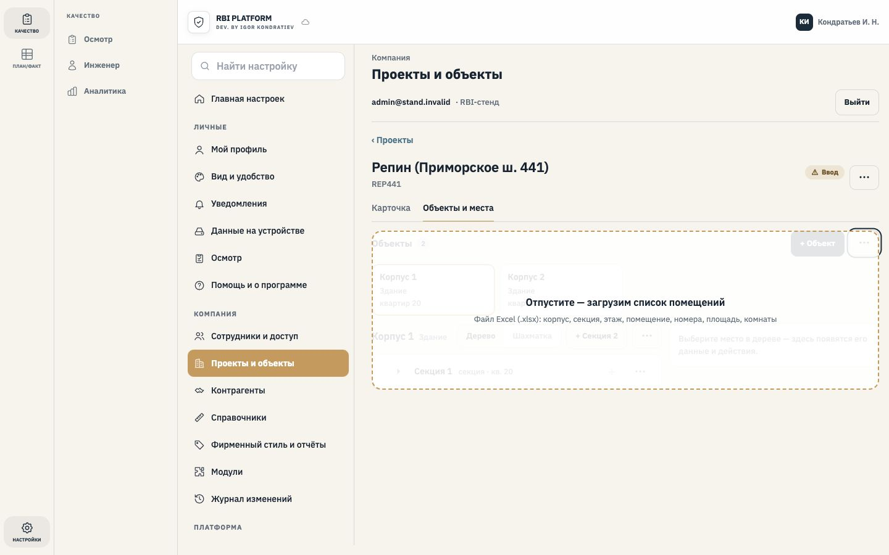</figure>
    <figure><figcaption class="new">Тёмная тема</figcaption>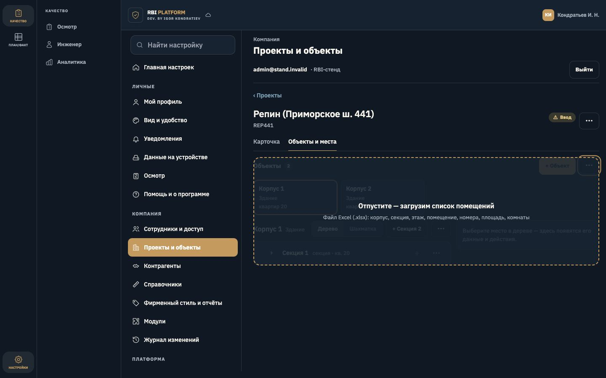</figure>
  </div>

  <h2><span class="n">3</span>Предпросмотр: столбцы, итог, строки «светофором»</h2>
  <div class="one"><figure><figcaption class="new">1440 px <span>· «Будет создано: 1 корпус, 2 секции, 8 этажей, 20 помещений · уже есть 19 · иначе 1»; кнопка «Создать 31 место» всегда внизу</span></figcaption>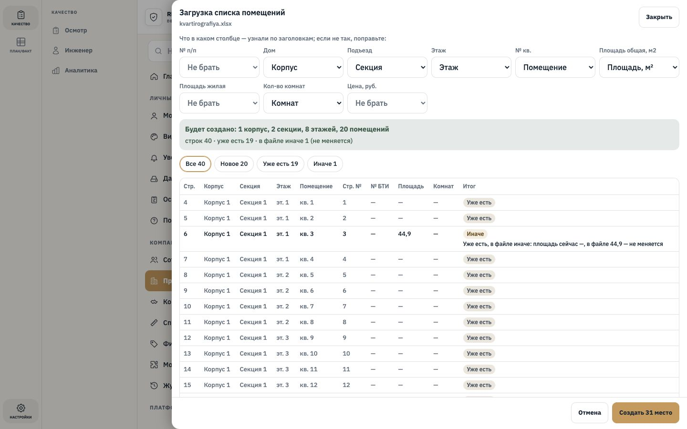</figure></div>
  <div class="pair">
    <figure><figcaption class="new">Тёмная тема</figcaption>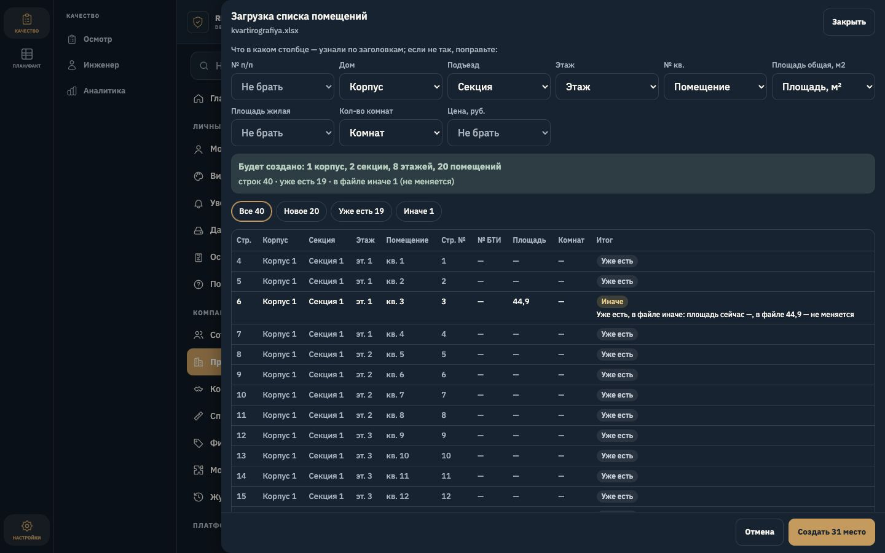</figure>
    <figure><figcaption class="new">Планшет 768 px</figcaption>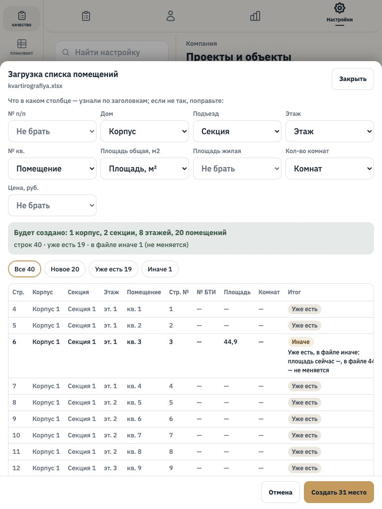</figure>
  </div>
  <div class="pair phone">
    <figure><figcaption class="new">Телефон 375 px <span>· таблица листается внутри</span></figcaption></figure>
    <figure><figcaption class="new">Телефон, тёмная</figcaption></figure>
  </div>

  <h2><span class="n">4</span>Ошибки в файле — создать нельзя, причина в каждой строке</h2>
  <div class="pair">
    <figure><figcaption class="new">Светлая</figcaption>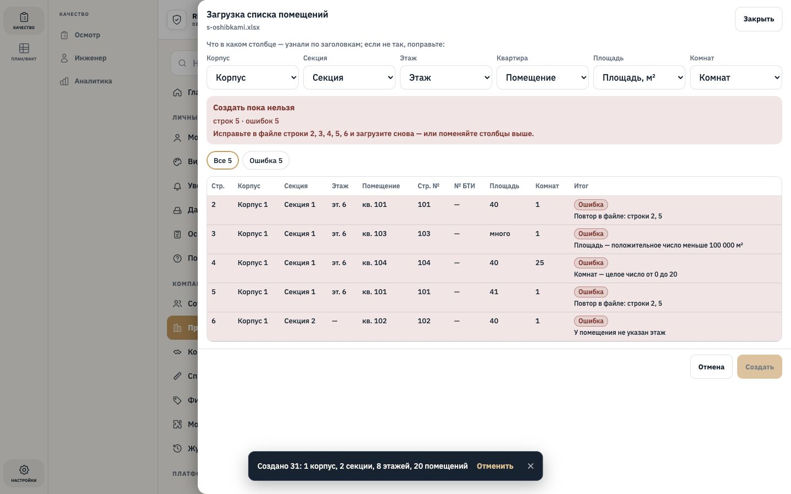</figure>
    <figure><figcaption class="new">Тёмная</figcaption>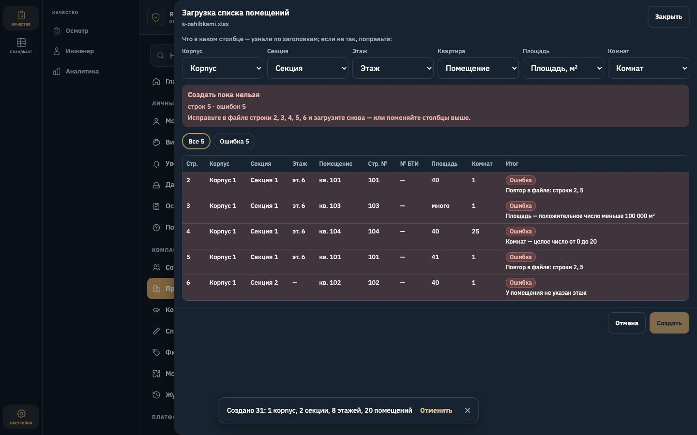</figure>
  </div>

  <h2><span class="n">5</span>После «Создать»: дерево, карточка квартиры, шахматка</h2>
  <div class="pair">
    <figure><figcaption class="new">«6 этаж», «7 этаж» по образцу соседей <span>· карточка Кв. 23: площадь 44,9, студия</span></figcaption>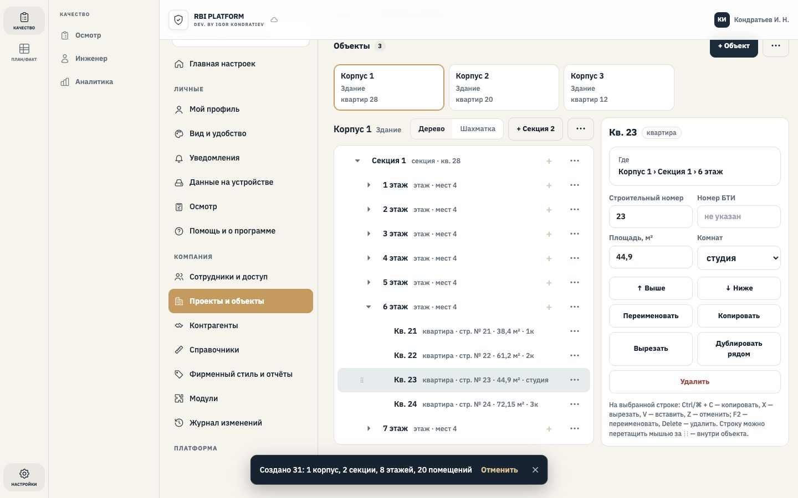</figure>
    <figure><figcaption class="new">Новый Корпус 3 — шахматка</figcaption>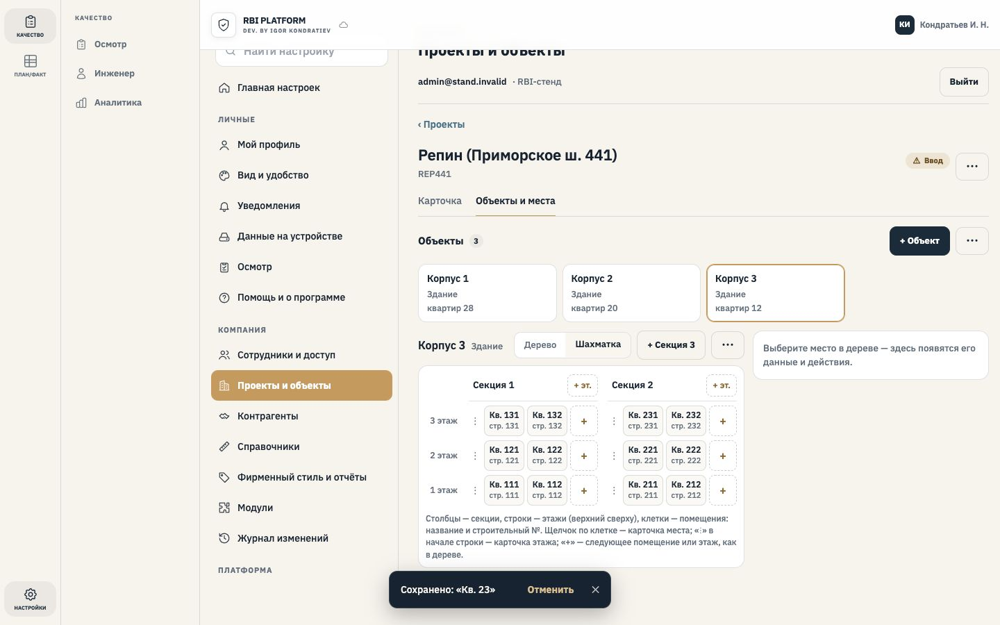</figure>
  </div>
  <div class="pair">
    <figure><figcaption class="new">Карточка, тёмная</figcaption>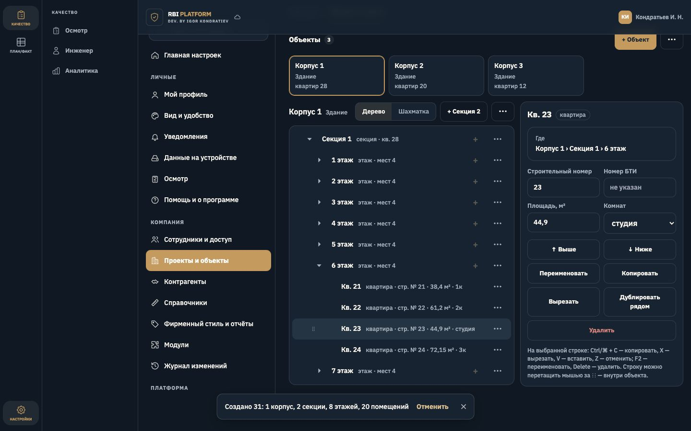</figure>
    <figure><figcaption class="new">Шахматка, тёмная</figcaption>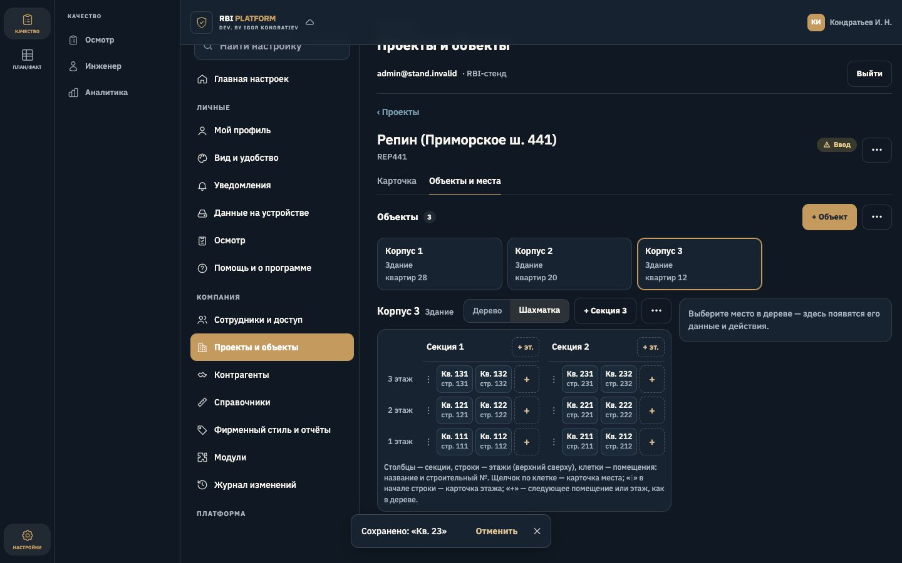</figure>
  </div>

  <h2><span class="n">6</span>Опись: что было → где теперь</h2>
  <div class="table-wrap"><table>
    <thead><tr><th>№</th><th>Функция</th><th>Где</th><th>Что изменилось</th></tr></thead>
    <tbody>
      <tr><td class="n">1–24</td><td>Все функции экрана P2-0055 (дерево, карточка, «+», правка в строке, копировать / вырезать / вставить, перетаскивание, «Выше / Ниже», «Отменить», шахматка, «+ Объект», «Заполнить объект», «Добавить этажи», «Добавить другое…», удаление)</td><td>там же</td><td><span class="tag same">без изменений</span></td></tr>
      <tr class="new"><td class="n">25</td><td>Загрузить список помещений из Excel</td><td>перетащить файл на экран (ПК); «⋯» рядом с «+ Объект» → «Загрузить из Excel…»</td><td><span class="tag add">новое</span></td></tr>
      <tr class="new"><td class="n">26</td><td>Скачать шаблон</td><td>«⋯» рядом с «+ Объект»</td><td><span class="tag add">новое</span></td></tr>
      <tr class="new"><td class="n">27</td><td>Площадь и комнаты квартиры</td><td>карточка квартиры; строка дерева; подсказка клетки шахматки</td><td><span class="tag add">новое</span></td></tr>
      <tr class="new"><td class="n">28</td><td>Копия этажа / секции переносит и комнаты</td><td>«Копировать», «Дублировать рядом»</td><td><span class="tag chg">дополнено</span></td></tr>
    </tbody></table></div>
  <p class="muted">Проверено на стенде: 116 проверок — 375 / 768 / 1024 / 1440 / 1920 px, светлая и тёмная; брошенный PDF — подсказка «PDF-планы — в следующем обновлении» (P2-0057), не-Excel — «Нужен файл Excel (.xlsx)».</p>
</main>
